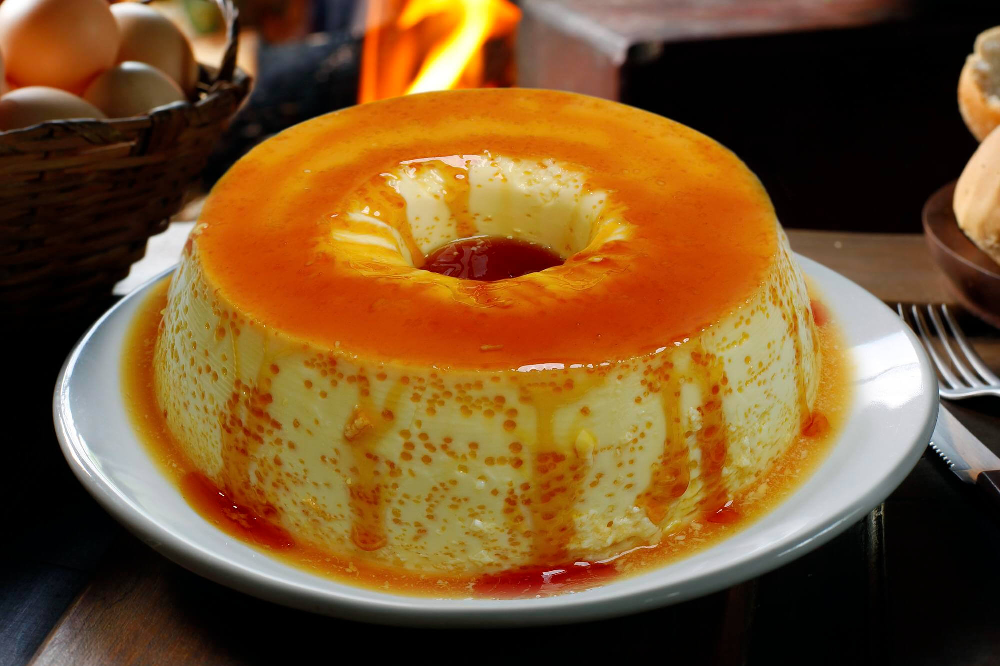

Pudim de pão

Ingredientes
- 4 ovos
- 1 lata de leite condensado
- 3 pães
- 1 colher de margarina
- 2 medidas de leite
- 1/2 xícara de açúcar
- 1 xícara de açúcar para a calda
Modo de preparo
- Misture todos os ingredientes no liquidificador e bata bem.
- Reserve.
- Em uma forma própria para pudim derreta o açúcar para fazer a calda, espere endurecer um pouco e coloque o líquido que está no liquidificador.
- Leve ao fogo por uns 35 minutos ou até você enfiar um garfo e ele sair limpo.